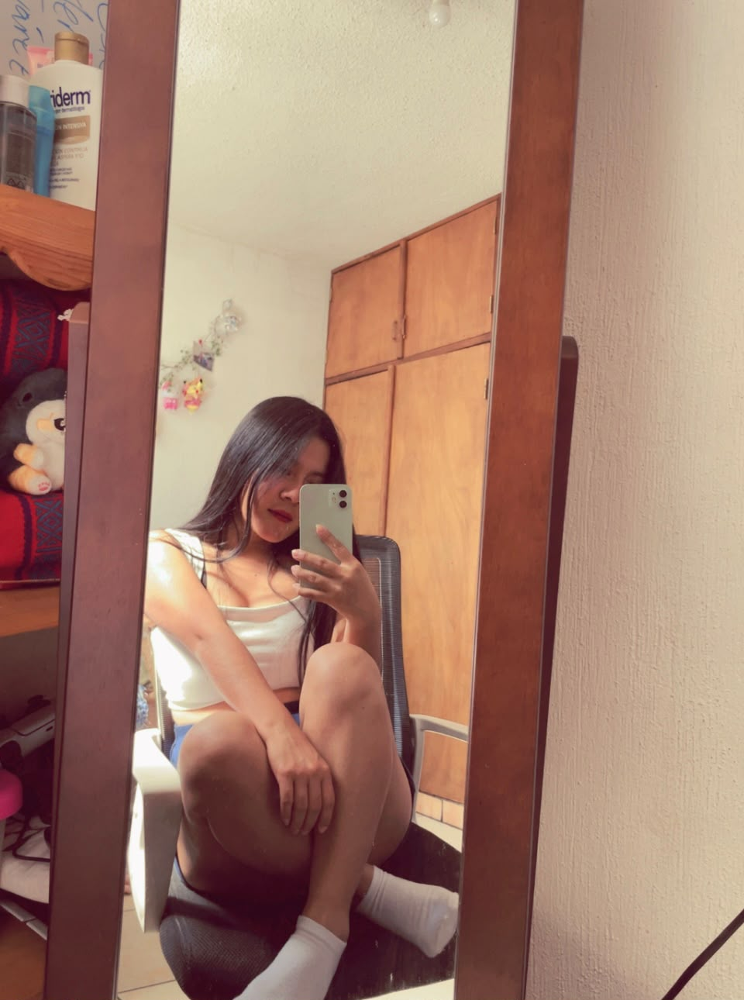
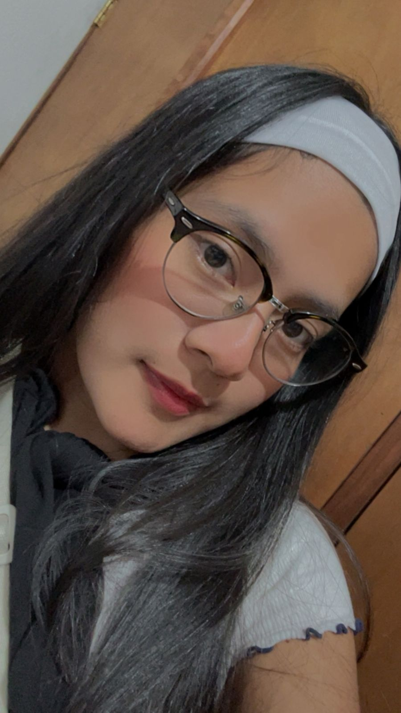
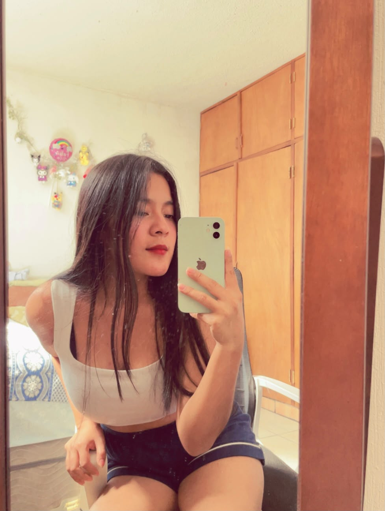
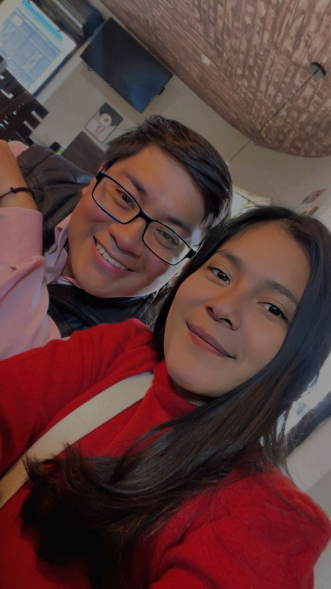
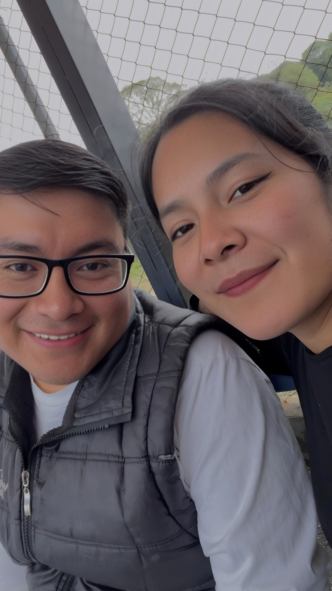
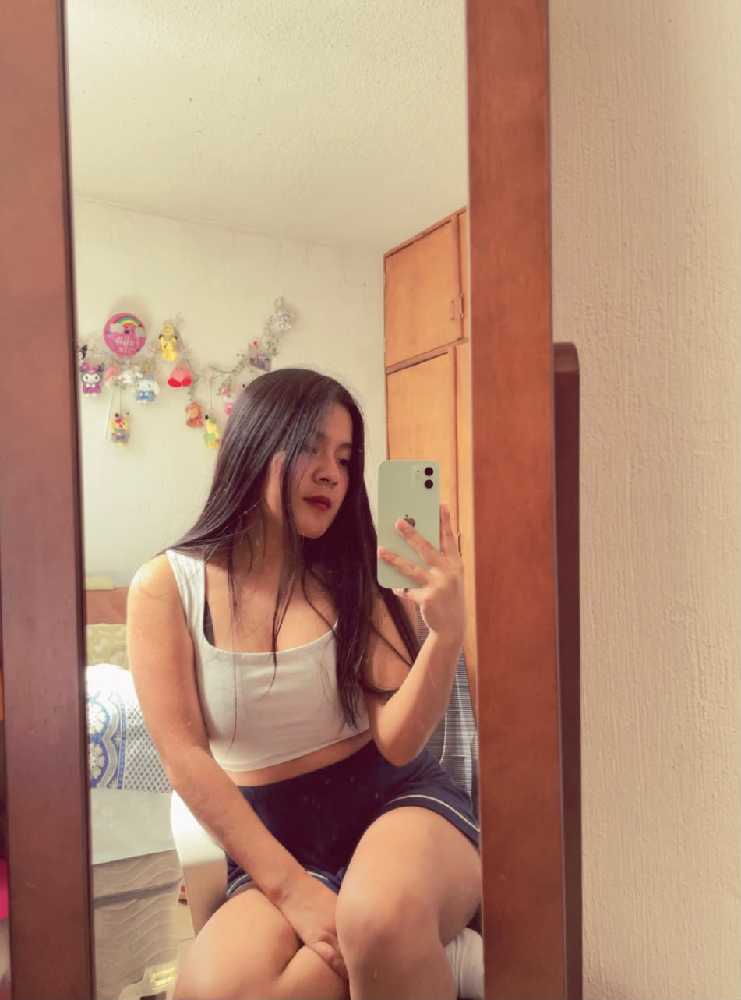
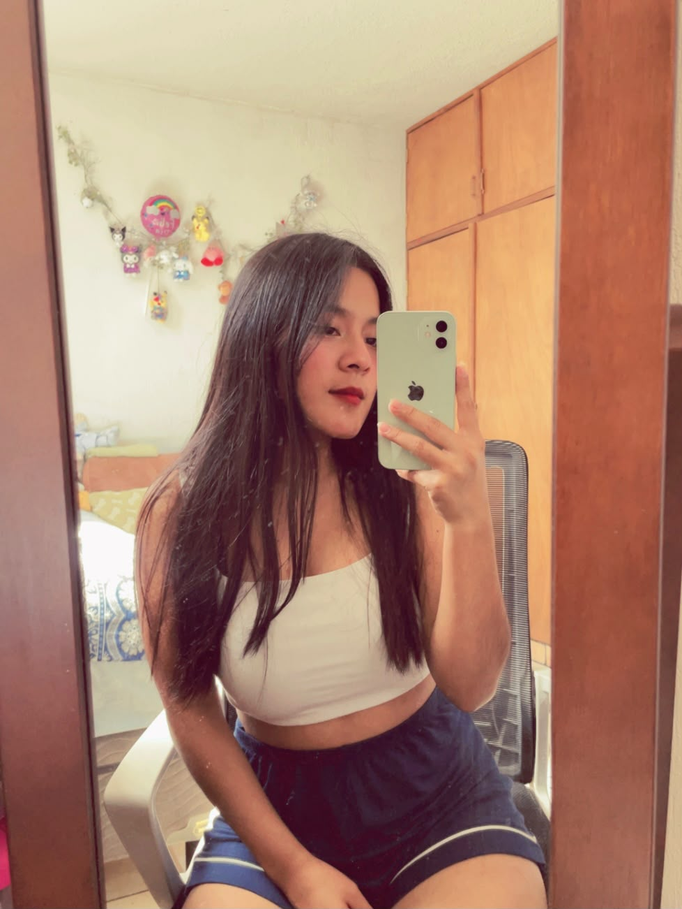
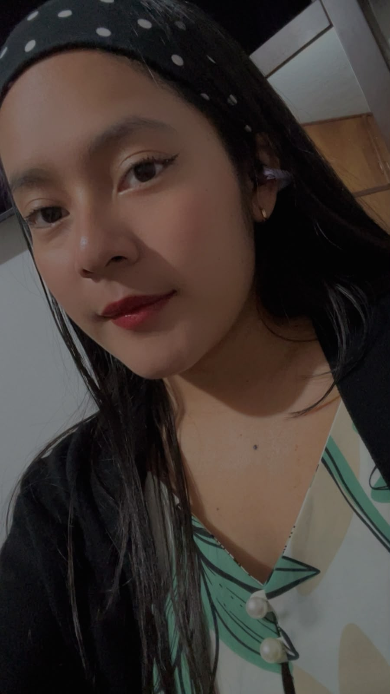

Tu voz
Porque escucharla siempre me transmite tranquilidad. Hay llamadas que terminan, pero la sensación de haber escuchado tu voz se queda conmigo durante mucho tiempo.
Loading...
Hay muchas cosas que quisiera decirte, pero esta vez preferí construir un lugar donde pudieras descubrirlas poco a poco.
Antes que nada, gracias por estar aquí.
Durante estos días me di cuenta de que muchas veces sentía cosas por ti que no siempre lograba expresar de la mejor manera.
Así que decidí crear este pequeño espacio, para mostrarte todos esos detalles que veo en ti y que hacen que, cada día, te admire un poco más.
Porque si hay algo que siempre me ha gustado hacer, es fijarme en esas pequeñas cosas que hacen que seas tú.
Si llegaste hasta aquí, gracias por regalarme un momento de tu tiempo. Durante estos días he pensado mucho en nosotros, en lo que vivimos, en lo que hice mal y, sobre todo, en la persona que quiero llegar a ser. Entendí que las palabras, por bonitas que sean, no pueden reparar por sí solas una confianza que fue lastimada. Eso solo pueden hacerlo el tiempo, la honestidad y las acciones. Por eso esta página no nació asi de la nada. Nació porque quería que existiera un lugar donde pudiera expresarte algo diferente: todo lo que admiro de ti. Muchas veces me preguntabas qué veía en ti, o qué era lo que tanto me gustaba. La verdad es que nunca supe responderlo por completo. No es una sola cosa. Son muchos pequeños detalles. Tu voz cuando hacemos llamada. Tu sonrisa cuando algo te hace feliz. La forma en que hablas. Cómo caminas. Cómo eliges la ropa que vas a usar. Incluso esos cuando nos molestamos mutuamente, que terminan haciéndome sonreír. Son esas cosas las que hicieron que te fueras convirtiendo en alguien tan especial para mí. Y si hoy estoy aquí, escribiendo cada una de estas palabras, es porque quiero que sepas que sigo viendo todo eso en ti. Ojalá que, mientras recorres esta página, puedas descubrir muchas de esas pequeñas razones por las que me encantas. Si alguna vez vuelves a preguntarme qué veo en ti, espero que esta página responda una pequeña parte de esa pregunta. Porque nunca ha sido una sola razón... siempre han sido cientos de pequeños detalles que, juntos, hacen que seas tú.
Porque escucharla siempre me transmite tranquilidad. Hay llamadas que terminan, pero la sensación de haber escuchado tu voz se queda conmigo durante mucho tiempo.
Me encanta verla aparecer cuando algo realmente te hace feliz. Es una de esas cosas que siempre consigue sacarme una sonrisa también, aparte me gusta verte sonreir.
Tus ojos siempre expresan más de lo que dicen las palabras. Me gusta perderme en ellos cada vez que puedo. Porque en tu mirada puedo ver tu alegría, tu ternura y todo lo que eres. Esa forma que me ves mientras te hablo, me hace sentir que todo lo que digo es importante para ti, y eso es algo que siempre voy a valorar.
Me encanta escuchar cómo expresas tus ideas y sentimientos. Cada palabra que dices tiene un toque especial que me hace admirarte aún más. Y me pierdo en la forma en que articulas tus pensamientos, porque refleja tu inteligencia y tu sensibilidad.
Me fascina la forma en que te mueves, con seguridad y gracia. Cada paso que das refleja tu personalidad y tu confianza. Es un detalle que me hace admirarte aún más, porque demuestra cómo llevas tu vida con determinación y estilo.
Siempre me fijo en cómo combinas tu ropa. Me encanta cuando eliges un outfit con el que te sientes bonita, porque se nota en la forma en que sonríes. Aparte de eso, me gusta ver cómo tu estilo refleja tu personalidad y cómo te expresas a través de la moda.
Lo que más admiro de ti no se puede resumir en una sola palabra. Eres fuerte, inteligente, cariñosa y haces que las personas que te rodean se sientan importantes. Me gusta cómo enfrentas los desafíos y cómo siempre buscas aprender y crecer. Tu personalidad es única y eso es algo que me hace admirarte cada día más.
Si algún día me preguntaran qué fue lo que más me enamoró de ti, no sabría elegir una sola cosa. Siempre han sido todos esos pequeños detalles que, juntos, hacen que seas tú. Única, especial y maravillosa. Y eso es algo que siempre voy a admirar y valorar.
No es solo tu sonrisa, tu voz o la forma en que caminas. Es que cada pequeño detalle, por sencillo que parezca, forma parte de la mujer que tanto admiro. Y eso es imposible resumirlo en una sola tarjeta. Me gusta todo de ti, y eso es lo que más me enamora.
Cada respuesta es un pequeño pedacito de ti que tengo la fortuna de conocer.
Ciudad - Su cama, Salir a caminar a cualquier lugar Ir a Reu (por diciembre que es alegre y mas fresco)
Durante mucho tiempo pensé que escuchar era solo oír. Hoy entiendo que escuchar también es comprender cómo se siente la otra persona.
Descubrí que las cosas más bonitas no siempre son las más grandes. Una sonrisa, una llamada, una conversación tranquila o un "buenos días" pueden significar muchísimo.
La confianza no se pide ni se exige. Se construye poco a poco y se cuida todos los días con honestidad y coherencia.
Las palabras pueden ser bonitas, pero solo las acciones tienen el poder de demostrar un cambio verdadero. Ese es el camino que quiero seguir.
Independientemente del tiempo que tome, quiero seguir convirtiéndome en una mejor versión de mí, porque ese cambio debe ser real y constante.
Cada clic, una razón más para admirarte.











Si leíste cada sección, gracias por dedicarme unos minutos de tu tiempo. Esta página nació porque muchas veces sentía cosas por ti que no sabía expresar de la mejor manera. Quise reunirlas aquí, con calma, para que pudieras leerlas cuando tú quisieras. Sé que el verdadero cambio no se escribe en una página. Se demuestra cada día, con decisiones, honestidad y constancia. Por eso quiero que lo que encontraste aquí sea solo el reflejo de lo que espero que también puedas ver en mis acciones. Gracias por seguir formando parte de una historia que, para mí, sigue siendo muy valiosa.